Option 2 · Story Cards · Interactive Prototype
Story Cards with the Concept tab
Click the tabs on each card. The Concept tab on the NDA projects shows your actual design thinking, real AI integration principles, and human-in-the-loop decisions — built from your IRO and Investigation AI POCs.
GSK's pharmaceutical sites were reactive to inspections by design. Each compliance risk lived in a different system — local SOPs checked manually against global requirements only when regulators arrived, trigger events going unlogged as formal deviations, and risk assessments sitting static while quality incidents accumulated. There was no aggregated view of inspection readiness across the network, and no way to act before an auditor walked in the door.
The challenge wasn't just designing a tool — it was figuring out whether the data was even ready for one. The design process ran parallel to the data science discovery: every research finding changed the product scope, and every scoping decision changed the design.
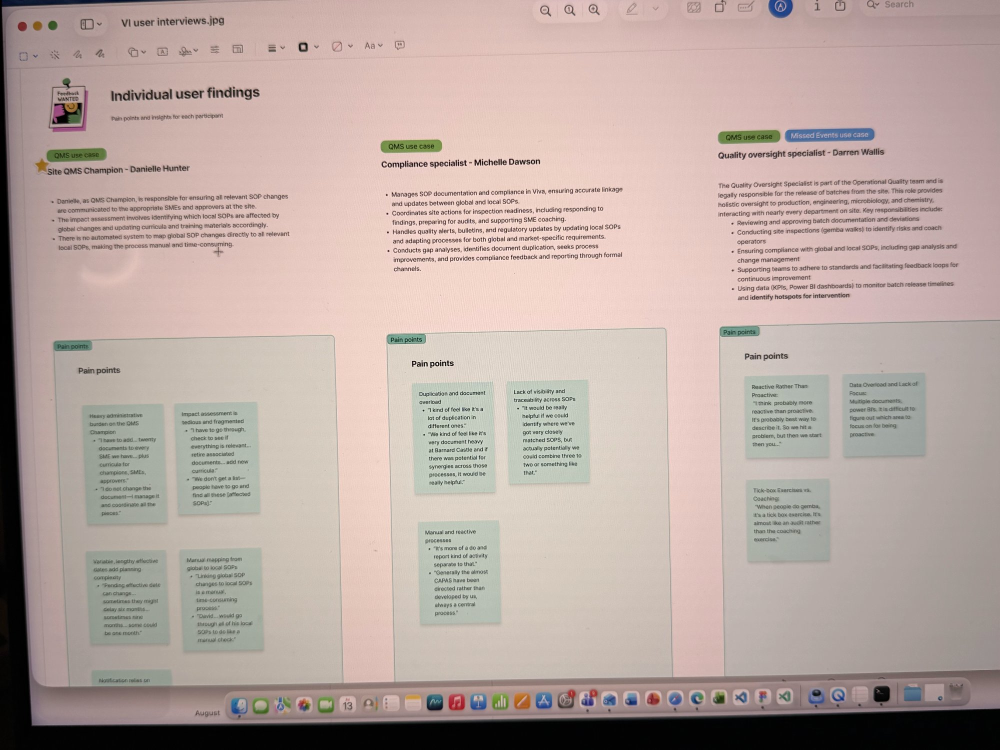
Manual, reactive processes. No real-time visibility. Tools that audit rather than coach. This came up in every interview, across all three roles.

Manual mapping is a major pain point. No standardised or automated way to link global SOP changes to local SOPs. Compliance processes are largely reactive. Teams benefit most from tools that highlight specific hotspots — not generic dashboards.
We set out to validate that data was ready to train an AI model. What we found: each site documented compliance differently — some in Excel, some in Word, some in legacy QMS systems. No consistent data pattern meant any model trained on the raw 11,000 gaps would produce unreliable results.
We narrowed scope to Sterility Assurance — the one stream with mature, consistently structured data across sites. This was a research finding, not a product decision. The design constraint came from the data.

The broken link: Global QMS sends a change → QMS Champion manually identifies which local SOPs are affected → routes to SMEs → no system tracks whether it happened. Every step is manual, invisible to the global team, and prone to delay.

Task-based queue, builds on existing VI app structure. Lowest engineering lift for the POC. Users already operate in this pattern.

Leads with an overview dashboard. Better for site leaders but higher cognitive load for daily reviewers. Deferred to MVP.
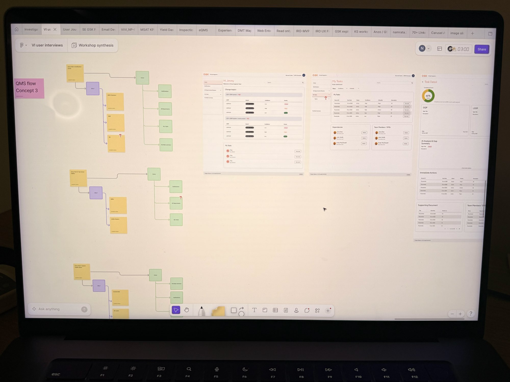
Closest to the existing QMS workflow. Complex interaction model with multiple branching paths. Too much re-training for a first version.
Users already operate in task-based queues — QMS, ServiceNow, email inboxes. Concept 1 met them where they were, minimised re-training, and gave us the fastest path to validating the core feedback loop. That was the POC goal. Features from Concepts 2 and 3 were carried into the MVP.

Parsing → Enrichment → Extraction → Gap Analysis. Each stage had a defined reviewer, platform, and feedback loop. I designed the Gap Analysis stage as the user-facing layer that fed directly back into model training.
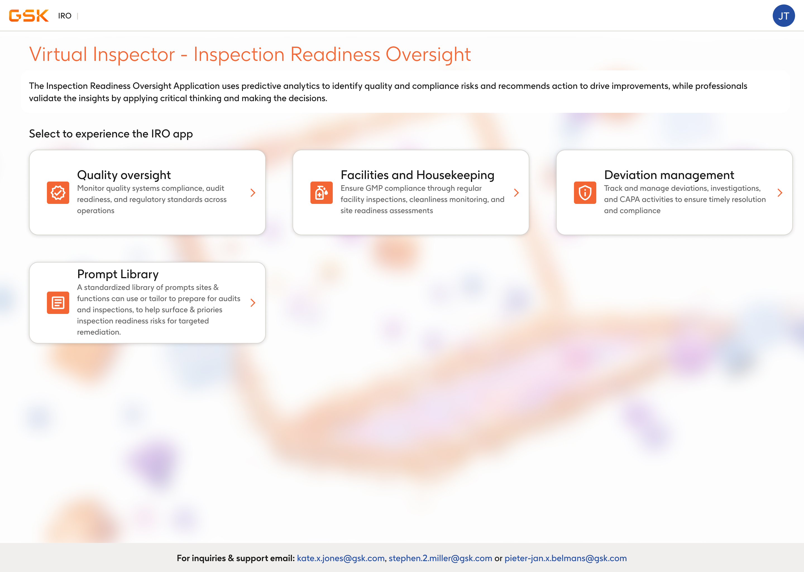

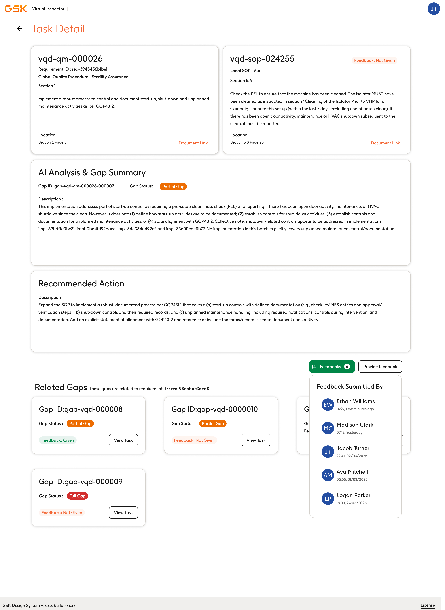

The form adapts based on whether the AI was correct and which gap type the reviewer selects. Designed with data scientists and SMEs — structured to capture exactly the training signal needed, nothing extra.
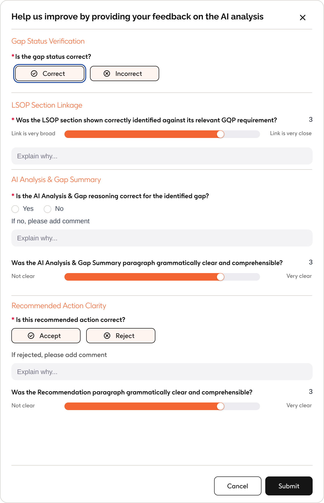


The working POC built in Claude — explore the AI gap-detection flow, the feedback mechanism, and the human-validation loop firsthand. No sign-in required to view.
This is a Claude-built proof of concept — open in any browser. It demonstrates the core AI-mapping and human-review interaction model, not a final GSK product.
| Gap ID | Requirement | AI status | Reviewed? |
|---|---|---|---|
| GAP-0101 ← tap to open | Start-up controls | AI: Partial | — |
| GAP-0102 | Shut-down controls | AI: Full gap | — |
| GAP-0109 | Shut-down controls | AI: No gap | — |
| Gap ID | Requirement | Status | Reviewed? |
|---|---|---|---|
| GAP-0101 | Start-up controls | Partial gap ✓ | ✓ You |
| GAP-0102 | Shut-down controls | AI: Full gap | — |
| GAP-0109 | Shut-down controls | AI: No gap | — |
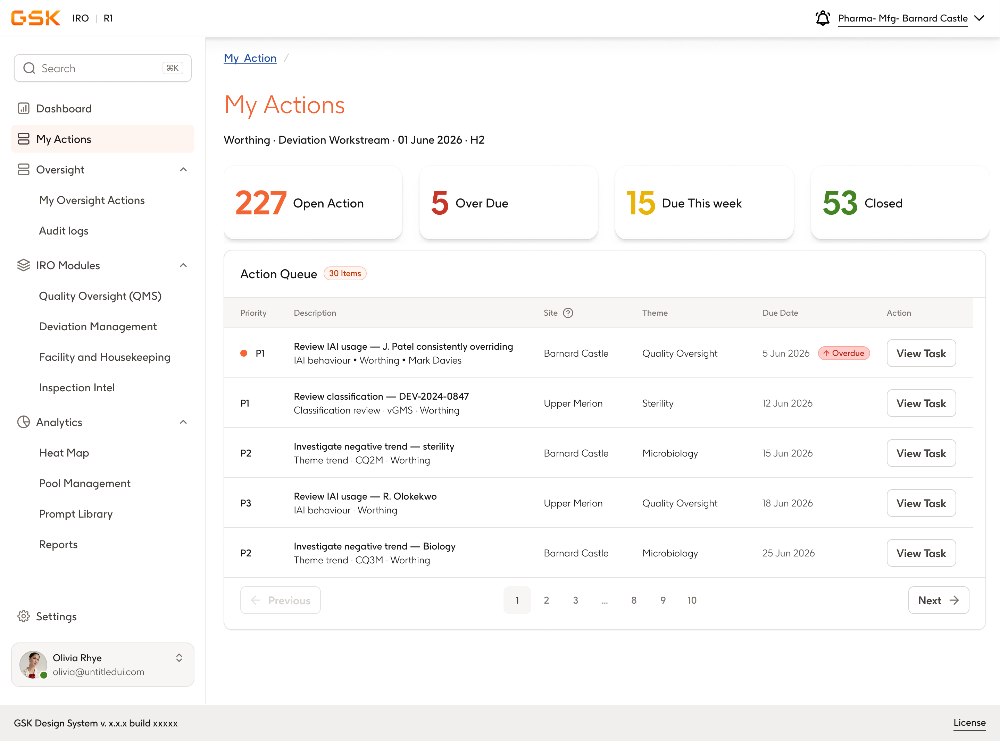


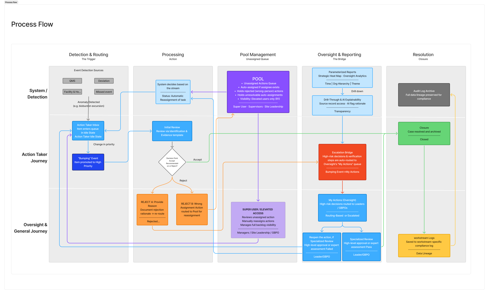
Detection & Routing → Processing → Pool Management → Oversight & Reporting → Resolution. Spans the Action Taker journey (review, accept/reject) and the Oversight journey (escalation bridge, leader review, audit archive).

Data sources (QMS, Deviations, Facilities, Missed Events) → AI signal generation → IRO Core Platform (prioritisation, assignment, lifecycle, audit) → UX Layer: Inbox, Action Detail View, Oversight/Reporting.
Walk through the actual interaction model — from a P1 action in your queue, through the evidence-backed 4-step review, to accepting it, then switching to the Oversight role to see how leaders manage escalations.
227 open actions, 5 overdue. P1 items surface first — the AI has already scored and prioritised them by urgency and risk.
AI maps, human validates — every time
The AI maps each global requirement to the site's local procedure and flags gaps. But every AI finding is unconfirmed until a quality manager reviews it. The dashboard shows "AI says: Partial gap" — not "Partial gap" — until a human confirms.
Gap transparency — both documents, side by side
Every gap view shows the exact text of the global requirement next to the local procedure text. The AI highlights where the local text falls short. The reviewer can always see the source — nothing is hidden in a summary.
Corrections train the model
When a reviewer says the AI got it wrong, they pick the correct status and their reason is captured. The feedback form is part of the product, not a separate research channel. These corrections feed back into the training dataset.
| Gap ID | Requirement | Local section | AI status | Site | Feedback |
|---|---|---|---|---|---|
| GAP-0101 | Start-up controls | LP-221 §3.1 | Partial gap | Site A | Not given |
| GAP-0102 | Shut-down controls | — | Full gap | Site A | Not given |
| GAP-0109 | Shut-down controls | LP-309 §4.1 | No gap | Site B | ✓ Given |
Opens the task board
Sees all AI-flagged gaps for their site. Each row shows what the AI found — but nothing is confirmed yet. Filters by site, status, or searches by gap ID.
Reviews a gap in detail
Opens GAP-0101. Sees the global requirement text side by side with the local procedure. The AI has highlighted the exact clause that is missing: "second-person verification."
Gives structured feedback
Confirms the AI is correct. Rates how close the section linkage was. Confirms the recommended action is right. All answers are captured for the training dataset.
Correction feeds back (when wrong)
If the AI was wrong — "this is No gap because we have a site-specific exemption" — the manager picks the correct status, selects the reason from a structured list, and that correction enters the training data.
AI-assisted oversight moved GSK's quality teams from reactive to proactive. Quality managers shifted from manual gap-hunting to acting on AI-surfaced signals. IRO 2.0 is now used daily by quality managers across multiple global sites.
Pharmaceutical manufacturing generates thousands of quality deviations a year. Scientists were manually triaging each one — deciding severity, root cause, and remediation — through a slow, unstructured process disconnected from regulatory context. Each investigation took 3–6 months. Root cause identification was inconsistent, and there was no way to learn from past cases at scale.
Designed a conversational AI workspace for pharmaceutical deviation investigations — 10 specialist agents that draft the investigation alongside the scientist. Built around one central design question: "Where to put the human, so that AI drafting is genuinely useful and every entry in the quality record stays attributable." The AI can never write to the record. Only the scientist can.
Two live builds to explore: the full MVP showing the scientist-AI workflow end to end, and a POC walkthrough stepping through each of the 10 specialist agents. Click into the real interaction model — draft, insert, attest, write-back.
These are Claude-built prototypes — open in any browser. They show the real interaction model: how the AI drafts, how the scientist reviews, and how the attestation works.
Where: TP-204, Barnard Castle, suite 3
When: 2026-02-14 14:32, Shift 2
Who: Operator T.Chen; Supervisor J.Obi
Why (preliminary): Possible feed frame calibration drift — confirm with physical inspection… Agent draft · not yet reviewed
- ✓ Save investigation to DEV-2026-0417
- ✓ Record your digital signature (21 CFR Part 11)
- ✓ Stamp timestamp: 2026-02-14 15:08 UTC
- ✗ Modify any other deviation record
- ✗ Change batch B-2411-087 disposition status
Drafting and recording are separate acts
AI drafts arrive with three buttons: Insert, Replace, Not useful. The agent cannot put anything into a field, save a step, or touch the quality record. Remove those three buttons and nothing moves.
Provenance is visible on every field
Text the agent wrote is marked "Agent draft, not yet reviewed" until the scientist edits it, when it becomes "Reviewed by you." The marker is about authorship, not correctness — the distinction an auditor cares about.
The agent declines
Ask it to classify the event, rate the risk, or save a step — it refuses and explains why. Where it is inferring rather than quoting, the draft says so. On the human factors step it will say the evidence is too thin rather than fill a field to be helpful.
Write-back is a deliberate act
The final page has no agent on it at all. It opens a dialog listing exactly what the action will and won't do, behind an explicit attestation. It touches one investigation record and nothing else.
Core workflow — 10 specialist agents, one workspace
The POC established the fundamental model: a scientist picks a quality event from Veeva, then moves through the investigation agent by agent. Each page follows the same pattern — AI drafts on the left, editable record on the right. Write-back to Veeva closes the loop.

Complex agent workflows added in MVP
One of the most complex screens to design. The AI suggests a causal chain, but scientists often see it differently — they may branch from any Why node. The challenge: show both the AI's reasoning and the scientist's edits without losing the audit trail. Solution: a live SVG diagram that updates in real time as the chain is built or branched, alongside the editable step panel.
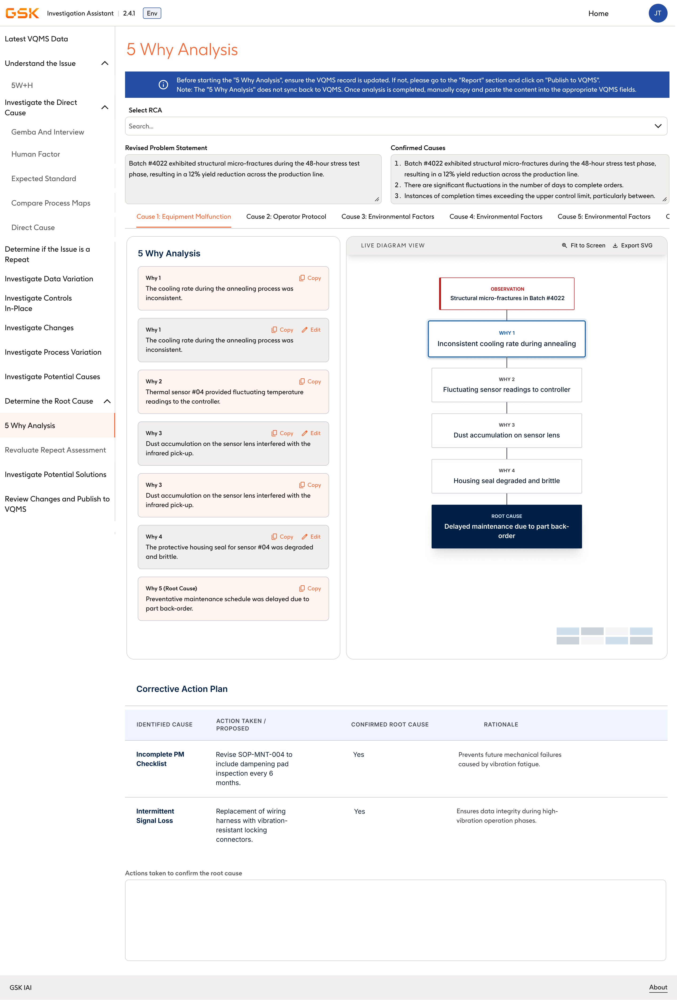
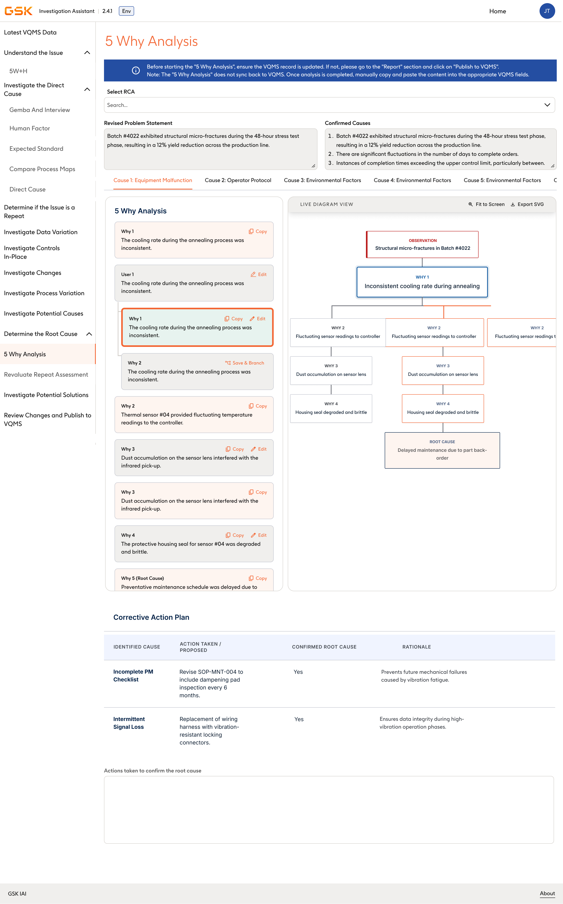
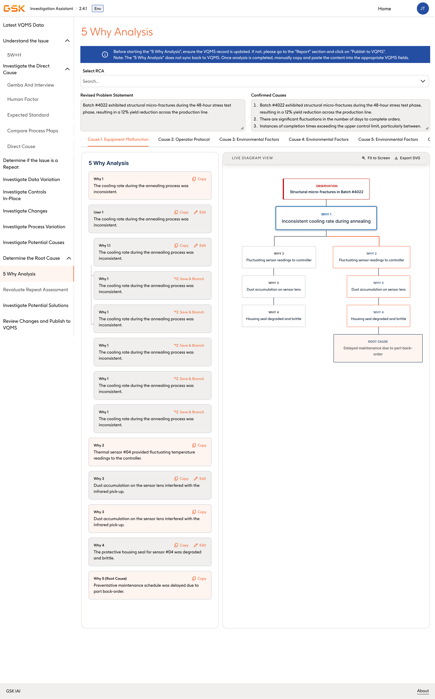
New in MVP: a structured 3-step workflow for solution generation and selection. The agent generates 10+ solutions categorised by type — Eliminate, Prevent, Educate — each expandable with an implementation plan and deep-dive chatbot. Step 2 searches historical CAPAs and LTAs in Veeva for similarity and conflict. Step 3 presents a final comparison — New, Modify, or Reuse existing CAPA — with justification required for every solution not taken forward.

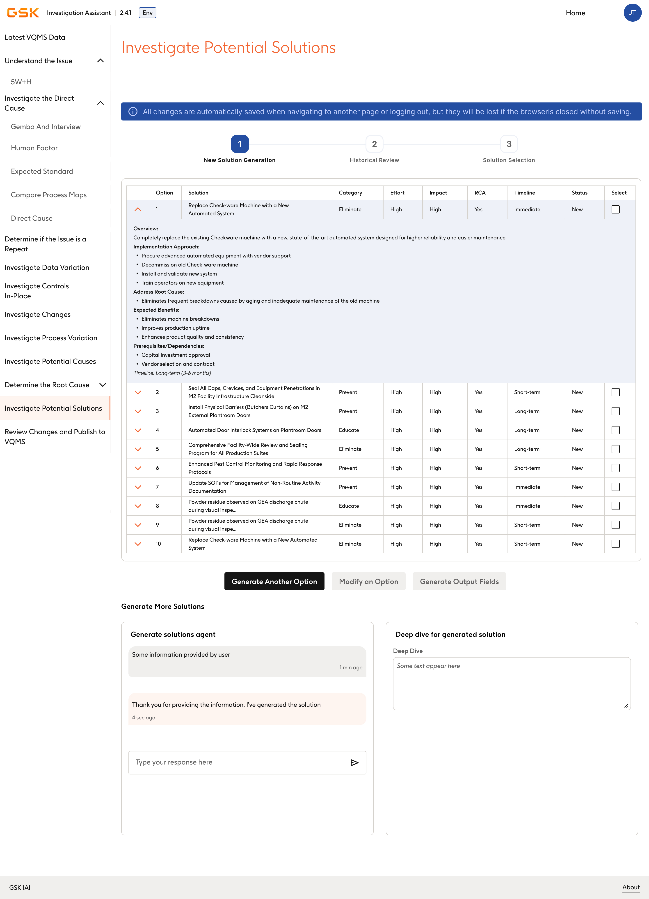
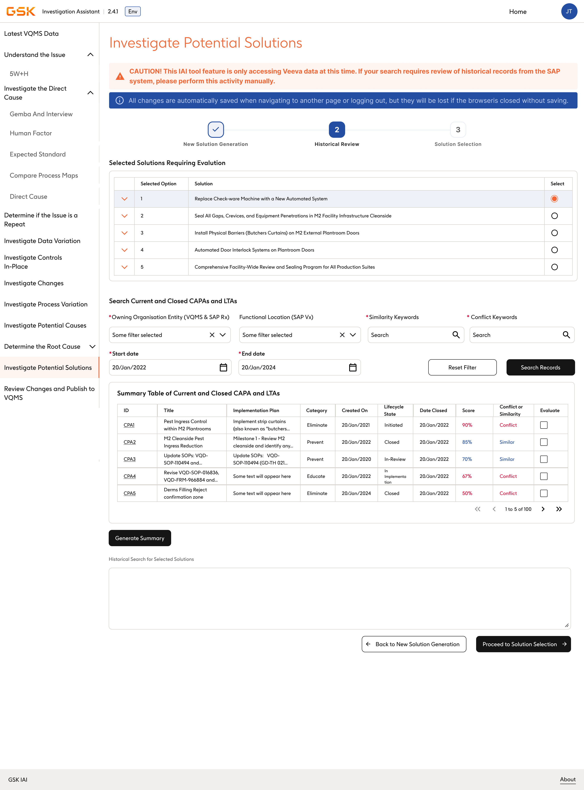

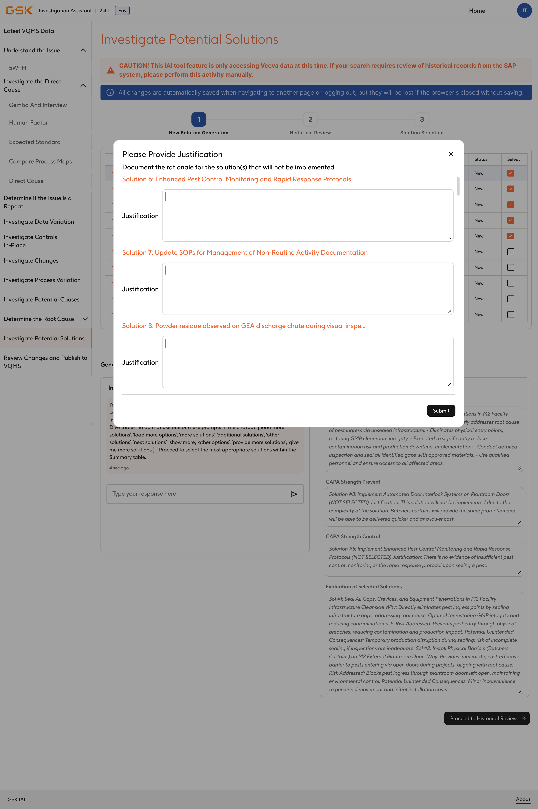
Opens DEV-2026-0417
Tablet weight reading of 207.4 mg and 208.1 mg against a limit of 205.0 mg. Compression suite 3, batch B-2411-087, rotary tablet press TP-204. 10 specialist agents ready in the sidebar.
Talks to the 5W2H agent
Types "draft all seven elements." Sees each one as a proposal — Insert or Replace. Inserts What/Where/When, amends Who, marks two as Not useful with a reason. Everything the agent put there is tagged "Agent draft, not yet reviewed."
Works through the 5-Why chain and fishbone
The root cause agent proposes a chain starting at feed frame calibration. The scientist accepts Why 1–3, amends Why 4, and replaces the root cause with their own finding from a physical inspection. Every field they touch becomes "Reviewed by you."
Attests and writes back
Final page — no agent present. A dialog lists exactly what will and won't be written. The scientist checks the attestation box and presses write-back. One record. Their name on it. Full audit trail.
Scientists spent less time on administrative triaging and more time on scientific reasoning. AI-assisted root cause workflows reduced the volume of open investigations. The product is embedded in GSK's global quality deviation process and is a key step in their AI-in-quality roadmap. Built to WCAG 2.1/2.2 AA — fully keyboard-operable, screen-reader compatible, reflows to 320px.
Engineering leaders inside Pluralsight FLOW were receiving generic, high-volume notifications that weren't actionable. Weekly digests buried the signal in noise — leaders couldn't quickly see what needed their attention, and the notifications failed to map to how engineering managers actually think about team performance. Support tickets were rising; engagement with the notification system was low.
Designed weekly digests and monthly reports for engineering leaders that surfaced the right signal at the right cadence. Rearchitected the notification model around engineering management mental models — separating team health signals from delivery metrics, and aligning digest timing to the team's sprint rhythm. Included a redesigned onboarding experience for 300+ new users that guided them to their first value moment within the first session.
A redesigned onboarding experience for 300+ users grew engagement by 40%. Engineering leaders reported that the new digest format was actionable from first read. The notification redesign reduced support ticket volume and increased weekly active usage of the FLOW platform.
Games24x7's card game platform (Rummy) had a customer support model that couldn't scale. 40+ distinct user flows — covering gameplay rules, withdrawals, referrals, and live chat with real money implications — were handled by human agents with inconsistent resolution quality and long wait times. App download conversion from the web was low, and a broken referral experience was costing acquisition revenue.
Designed Rumy — a conversational AI handling 40+ flows covering gameplay rules, withdrawals, and live game support. Built the entire conversation design system from scratch: decision trees, error recovery flows, handoff logic to human agents for edge cases, and a register-before-download conversion redesign that removed friction at the acquisition step. The referral experience was rearchitected as a shareable moment, not a buried settings page.
Rumy resolved 40+ support flows without human intervention, reducing agent load and improving response time to under 10 seconds. The referral redesign increased referral-driven installs meaningfully. The register-before-download flow quintupled conversion — one of the highest-impact conversion improvements in the product's history.